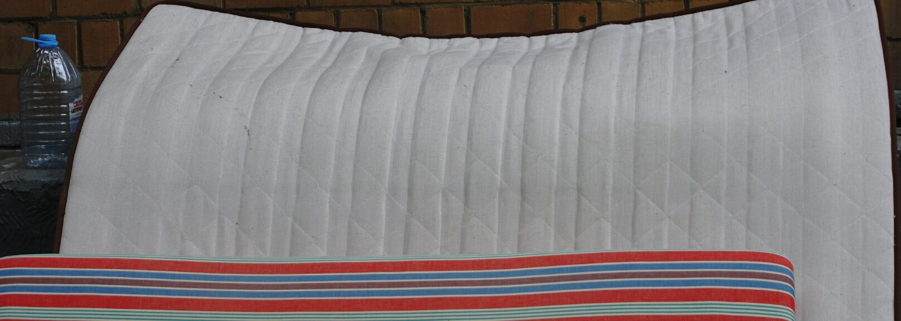

Styles of owo — the engine behind iwwwanow.ru — copied 1:1. Nothing here is re-styled: this page itself is built only from owo classes and tags.
The few places where the kit differs from owo are collected in one block at the end of owo.css, each with a link to the matching note in owo's backlog.
Components generated on top of owo live on a separate page: ai-generated.
<link rel="stylesheet" href="owo.css" />All tokens are custom properties on :root. Body colour is not set — text is browser black; LIGHT is borders and pre, MEDIUM is labels, BLUE is links and text selection.
:root {
--WHITE: #fff; --LIGHT: #e0e0e0; --MEDIUM: #a4a4a4;
--DARK: #535353; --BLACK: #000;
--RED: #f00; --GREEN: #00ff9b; --BLUE: #009bff;
--BLUE-DARK: #0040ff; --ORANGE: #ff9b00;
--js: #f0db4f; --css: #2965f1;
--GRID-GAP: 16px;
--2-GRID-GAP: 32px; --GRID-GAP-2: 8px;
--GRID-GAP-4: 4px; --GRID-GAP-8: 2px;
--SEPARATOR-COLUMN: 4;
--CARD-HEIGHT: 288px;
--Z-INDEX-SECOND-LEVEL: 2;
}One typeface for everything: Roboto Condensed 400, 700, italic 300 and italic 700, set on * with "Helvetica Neue Condensed" as fallback. owo also imports regular Roboto, but no rule uses it. Root font-size is 62.5%, so 1rem = 10px and tags size themselves in em off the root. Below 444px the root grows to 72% and h1 / h2 shrink.
Художник. Цифровая живопись, цифровой коллаж, цифровая фотография, традиционная живопись и рисунок. Код.
The quick brown fox jumps over the lazy dog.
function render(el) {
return el.outerHTML;
}Inline: run scripts/sync-owo.sh after owo changes.
Roboto Mono is not loaded by owo, so code falls back to the system monospace.
Differs from owo: there code is 1.6em, which compounds inside a p (25.6px). Here pre is 1.6rem and code is 1em. See owo docs/backlog/2026-10-24_code-font-size-compounds.md.
.wrapper is the page: a flex column with 32px between rows. Every row is a .grid — 8 columns of 190px with a 16px gap, centered. Resize the window: 1680px → 6 columns, 1268px → 4, 858px → 3, 650px → 2, 444px → 2 × 1fr, 360px → 1.
.grid__left-content runs from the first column to --SEPARATOR-COLUMN (4 → 3 → 2), .grid__right-content from there to the end.
<div class="wrapper">
<header class="grid header">…</header>
<div class="grid">
<div class="grid__left-content">…</div>
<div class="grid__right-content">…</div>
</div>
<footer class="grid footer">…</footer>
</div>A divider: a 1px LIGHT line, optionally with a label — .hr_fieldset with an h6 legend, always lowercase. It works in any block.
As a direct child of .grid it spans the whole row (grid-column: 1 / -1). That is how owo heads its sections — resources, featured-projects, footer — and how every section on this page starts.
Text between dividers inside a plain block.
A plain hr is the same line without a label.
<fieldset class="hr_fieldset">
<legend><h6>label</h6></legend>
</fieldset>
<hr />
<!-- as a section heading -->
<div class="grid">
<fieldset class="hr_fieldset"><legend><h6>section</h6></legend></fieldset>
…
</div>1px borders that change on hover. .border_light is the media card border — it fades into the white page on hover. .border_dashed marks the directory badge.
<div class="border">…</div>
<div class="border_light">…</div>
<div class="border_dashed">…</div>
The resource card: 288px tall (214px below 360px), cover fills it, title sits bottom-left in DARK h4. Directories get a .card__dir-badge. Wide cards span 2 or 4 columns — owo leaves their breakpoints to the page.
<a class="card__wrapper border_light" href="/path">
<h6 class="card__dir-badge border_dashed">directory</h6>
<picture class="card__cover-container">
<img class="card__img" src="cover.png" alt="page card cover" />
</picture>
<div class="card__text-container">
<h4 class="card__text-header">Title</h4>
</div>
</a>
<a class="card__wrapper border_light card--span-2" …>
<a class="card__wrapper border_light card--span-4" …>Header and footer are grids too: links in h5, everything uppercase. The footer is pushed to the bottom of .wrapper with margin-top: auto. Both are used on this page.
<header class="grid header">
<a href="/"><h5>iwwwanow.ru</h5></a>
</header>
<footer class="grid footer">
<fieldset class="hr_fieldset"><legend><h6>footer</h6></legend></fieldset>
<h5><a href="https://github.com/iwwwanow/owo">owo builded</a></h5>
</footer>A full reset: no margins, paddings or borders, border-box everywhere, no list bullets, no link underline, form controls inherit font and colour. Square 8px scrollbar on LIGHT, BLUE text selection — select this text to see it.
* { padding: 0; margin: 0; border: none; }
*, *::before, *::after { box-sizing: border-box; }
::selection { color: white; background: var(--BLUE); }
::-webkit-scrollbar { height: 8px; width: 8px; }
::-webkit-scrollbar-track { background: var(--LIGHT); }
::-webkit-scrollbar-thumb { background: var(--MEDIUM); }
::-webkit-scrollbar-thumb:hover { background: var(--DARK); }